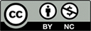

한국문헌정보학회지
Journal of the Korean Library and Information Science Society| 학술지 소개 |
|---|
|
한국문헌정보학회지는 복합학에 속하는 문헌정보학 분야의 국내 대표학술지이다. 한국문헌정보학회는 1970년 설립된 문헌정보학계의 대표 학회로서 문헌정보학 분야의 연구자와 실무자들이 폭 넓게 참여하고 있어, 현장의 요구를 파악하고 학계의 최신 연구결과를 현장에 전파할 수 있는 학술교류의 장으로서 기능하고 있다. 한국문헌정보학회지는 이러한 산학연교류의 중심채널로 기능하고 있는 국내 문헌정보학계의 대표적 학술지이다. |
|
· 발행기관 : 한국 문헌정보학회 · 연구 분야 : 복합학 > 문헌정보학 · ISSN : 1225-598X · e-ISSN : · 창간년도 : 1970년 · 발행간기 : 연4회, 02월 28일, 05월 30일, 08월 30일, 11월 30일 · 최근 발행 정보 : 2019년, 53권 4호 · KCI IF(2018) : 0.66 |
| 인용지수 2018년 기준 |
|---|
|
|
| 편집위원회 | |
|---|---|
| Editor-in-Chief | Dongsoo Kim, Soongsil University, Korea |
| Editorial Board |
Hangbae Chang, Chung-Ang University, Korea Tai-Woo Chang, Kyonggi University, Korea Kyung Jin Cha, Hanyang University, Korea Byounggu Choi, Kookmin University, Korea Jonghoon Chun, Myongji University, Korea Jae-Yoon Jung, Kyung Hee University, Korea Han-joon Kim, University of Seoul, Korea Jeong Yeon Kim, Sangmyung University, Korea Kwanho Kim, Incheon National University, Korea |
| 투고규정 |
|---|
| <원고작성> |
|
■ 일반사항 1.국문원고를 기준으로, 참고문헌・그림・표・부록 등을 포함하여 워드프로세서(hwp 또는 docx 파일)로 작성한 20페이지 이내를 원칙으로 하며, 최대 30페이지를 초과할 수 없다. 2.원고 표지에는 논문제목, 저자정보, 목차, 초록, 키워드를 기재한다. 목차를 제외한 항목은 국문과 영문을 병기한다. 3.국문원고에 기술된 외국어나 외래어는 한글 역어 또는 원음에 따라 한글로 표기하되, 필요한 경우 첫 번에 한하여 원어를 부기한다. 외국인명은 한글로 표기하지 않고 외국어 그대로 적는다. 4.본문인용 및 참고문헌의 기술방식은 본 학회 논문심사규정의 『논문투고양식』을 따른다. 5.초록은 지시초록으로 하며, 단락구분 없이 연속적으로 기술한다. 영문초록은 200단어 이내, 국문초록은 500글자 이내로 한다. 6.참고문헌은 본문 다음에 ‘참고문헌’으로 나열하되, 본문에서 인용하거나 언급한 문헌만을 제시한다. 7.국문 참고문헌은 영문화를 병기하여 기재한다. |
|
■ 저자 1.원고의 첫 페이지에는 논문제목, 저자명, 목차, 초록, 키워드를 기재하며, 원고 전체에 페이지수를 표시한다. 저자 소속기관 및 직급, 저자 이메일 주소는 각주로 기재한다. 2.논문의 저자가 2인 이상인 경우, 첫 번째에 기재한 저자를 원고 내용에 대한 책임저자(First Author)로 하고, 나머지 저자를 공동저자로 인정한다. 3.논문의 저자가 2인 이상인 경우, 책임저자(First Author)와 교신저자(Corresponding Author)를 구분하여 표기하되, 원고 표지에는 모든 공동저자의 저자명, 직급, 소속기관을 기재하고 이메일 주소를 명기한다 |
| 연구윤리 |
|---|
| 제 1 조(목적) 이 규정은 한국문헌정보학회(이하 ‘학회’라 한다)에서 수행되는 연구에 대해, 그 연구들이 내용적으로나 형태적으로 사회 공동의 윤리성과 진실성을 담보하기 위한 규율체계를 규정하는 것을 목적으로 한다. |
| 제 2 조(용어의 정의) |
|
① 연구 부정행위(이하 “부정행위”라 한다)라 함은 연구의 제안, 연구의 수행, 연구결과의 보고 및 발표 등에서 행하여진 위조·변조·표절·이중게재·부당한 논문저자 표시 행위 등을 말하며 다음 각 호와 같다. 1. “위조”는 존재하지 않는 데이터 또는 연구결과 등을 허위로 만들어 내는 행위를 말한다. 2. “변조”는 연구 재료·장비·과정 등을 인위적으로 조작하거나 데이터를 임의로 변형·삭제함으로써 연구 내용 또는 결과를 왜곡하는 행위를 말한다. 3. “표절”이라 함은 타인의 아이디어, 연구내용·결과 등을 정당한 승인 또는 인용 없이 도용하는 행위를 말한다. 4. “이중게재”는 연구자 자신의 연구결과를 중복게재·자기표절·짜깁기 등으로 사회의 통념상 용인되는 범위를 넘는 행위를 말한다. 5. “부당한 논문저자 표시”는 연구내용 또는 결과에 대하여 과학적·기술적 공헌 또는 기여를 한 사람에게 정당한 이유 없이 논문저자 자격을 부여하지 않거나, 과학적·기술적 공헌 또는 기여를 하지 않은 자에게 감사의 표시 또는 예우 등을 이유로 논문저자 자격을 부여하는 행위를 말한다. 6. 본인 또는 타인의 부정행위 혐의에 대한 조사를 고의로 방해하거나 제보자에게 위해를 가하는 행위. 7. 기타 과학기술계에서 통상적으로 용인되는 범위를 심각하게 벗어난 행위. 8. 타인에게 상기의 부정행위를 행할 것을 제안·강요하거나 협박하는 행위. |
| 저작권 정보 |
|---|
|  |
|
1.논문에 대한 저작권자는 학회입니다. |
|
2.저자가 소속된 기관 및 단체, 연구비를 지원하고 그 사실이 논문에 표시된 단체, 저자의 개인 WEB SITE에서 공개 가능합니다. |
|
3.원문 접근 정책 |
| 연락처 |
|---|
|
Tel : 062-530-2660 Fax : 062-530-2669 E-mail : kslisinfo@gmail.com 61186 광주광역시 북구 용봉로 77 3층 330호(용봉동, 전남대학교 사회과학대학 문헌정보학과) |